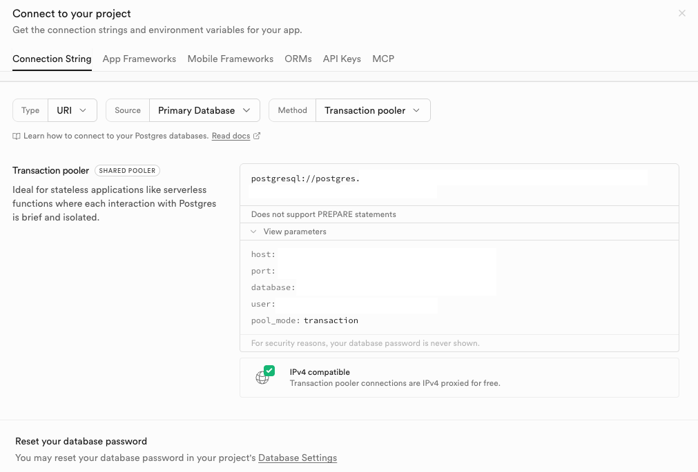
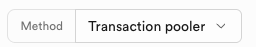
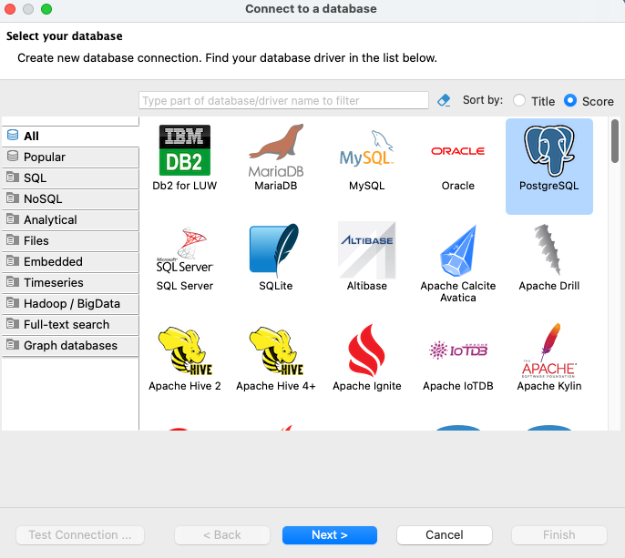
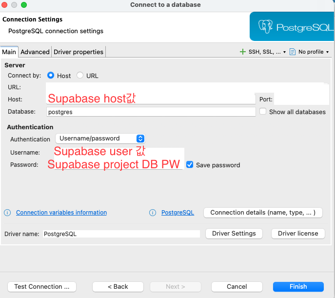

DB
Supabase DB를 DBeaver로 접속하기
Supabase에서 연결 정보를 확인하고, DBeaver에서 PostgreSQL 연결을 만들어 테이블을 바로 해볼 수 있다.
개요
Supabase는 내부적으로 PostgreSQL을 쓰기 때문에, 연결 정보만 정확히 가져오면 DBeaver 같은 DB 클라이언트에서 바로 붙을 수 있다.
핵심은 Supabase의 Connection String 화면에서
host, port, database,
user 값을 확인하고, DBeaver의 PostgreSQL 연결 설정에
그대로 옮겨 넣는 것이다.
이 글은 Supabase 화면의 Transaction pooler 기준으로
진행한다. 화면에 보이는 연결 문자열을 그대로 복사하기보다,
아래 파라미터를 펼쳐 각 항목을 나눠 넣으면 실수하기 훨씬 쉽다.
준비
- Supabase 프로젝트 1개
- DBeaver 설치
- 프로젝트의 DB 비밀번호
사용자명, 호스트, 포트는 Supabase 화면에서 확인할 수 있지만, 비밀번호는 기존에 설정한 DB 비밀번호를 직접 입력해야 한다. 비밀번호가 기억나지 않으면 Supabase Database Settings에서 재설정하면 된다.
Supabase에서 연결 정보 확인하기
프로젝트 화면에서 Connect를 열고
Connection String 탭으로 들어간다. 여기서
Type은 URI, Source는
Primary Database로 두고, Method는
Transaction pooler를 선택한다.

View parameters를 열면 DBeaver에 넣어야 할
host, port, database,
user 값이 항목별로 보인다.

Transaction pooler 선택 기준으로 진행했다.
이 화면에서 확인할 값은 아래 다섯 개다.
Host: Supabase가 제공하는 PostgreSQL 호스트Port: Pooler 포트Database: 보통postgresUser: 프로젝트별 PostgreSQL 사용자명Password: 화면에 표시되지 않는 DB 비밀번호
연결 문자열 한 줄 전체를 다룰 수도 있지만, DBeaver에서는 보통 항목별 입력이 더 읽기 쉽고 수정도 편하다.
DBeaver에서 PostgreSQL 연결 만들기
DBeaver에서 새 데이터베이스 연결을 만들고 드라이버 목록에서
PostgreSQL을 선택한다.

PostgreSQL을 선택하고
Next로 이동한다.
다음 화면의 Main 탭에서 Supabase에서 확인한 값을 그대로
입력한다.

Host, Port, Database,
Username, Password만 맞으면 기본 연결은
거의 끝난다.
Host: Supabase 화면의 host 값
Port: Supabase 화면의 port 값
Database: postgres
Username: Supabase 화면의 user 값
Password: 프로젝트 DB 비밀번호
화면처럼 Connect by: Host 기준으로 넣으면 가장 직관적이다.
URL 모드도 가능하지만, 처음에는 어느 값이 어디에 들어가는지 보이는
Host 방식이 실수 줄이기에 좋다.
연결 확인
값을 모두 넣은 뒤에는 Test Connection ...으로 먼저 확인한다.
테스트가 통과하면 Finish를 눌러 연결을 저장하면 된다.
Password authentication failed: DB 비밀번호가 틀린 경우가 많다.Unknown host또는 접속 실패: host, port 복사값을 다시 확인한다.Database값 오류: 기본값이postgres인지 다시 본다.
연결이 완료되면 DBeaver 왼쪽 Database Navigator에서 스키마와 테이블을 펼쳐 바로 조회할 수 있다.
마무리
Supabase를 DBeaver로 연결하는 과정은 생각보다 단순하다. Supabase에서 연결 파라미터를 확인하고, DBeaver의 PostgreSQL 연결 설정에 같은 값을 옮겨 넣으면 끝이다.
특히 문자열 전체를 복사해 붙이는 방식보다, View parameters를
펼쳐 항목별로 확인하면서 입력하는 쪽이 훨씬 덜 헷갈린다. 나중에 host나
port를 다시 점검할 때도 이 방식이 가장 편하다.